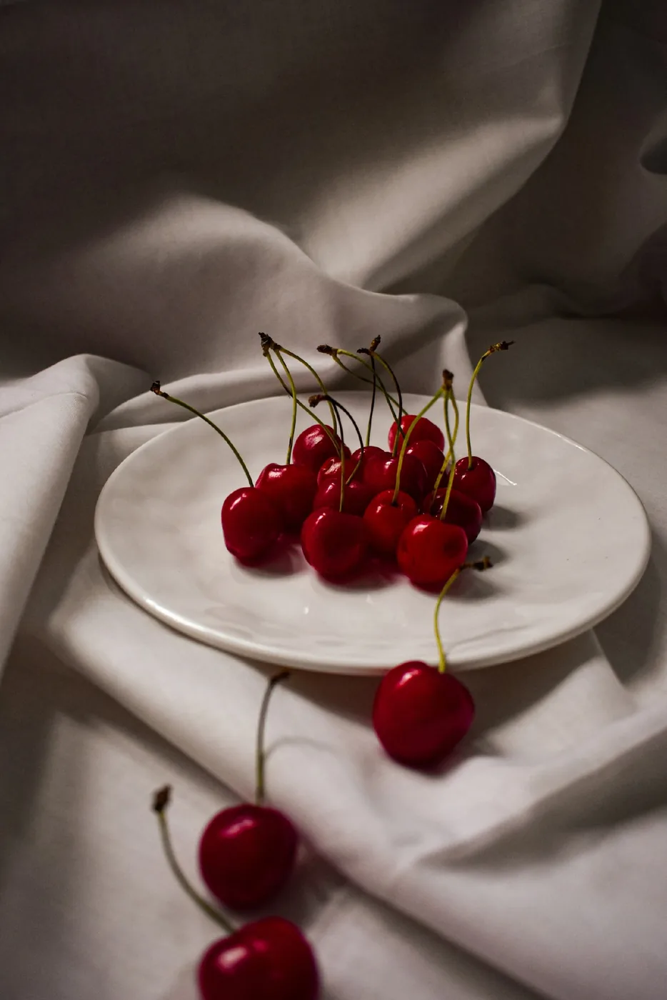
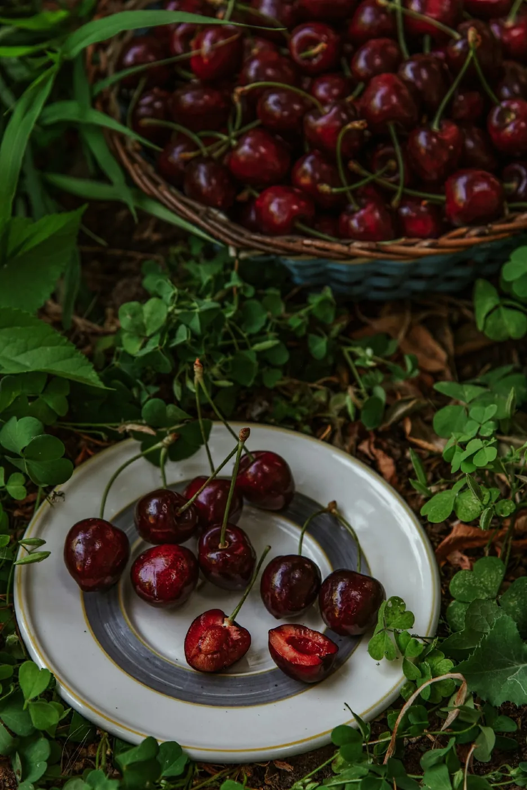

Понятно
Пользователь сразу видит разницу между сортами и не ищет важное в длинной простыне текста.
О CHERRY?
CHERRY? — учебный концепт небольшого магазина, где сорта отличаются не только названием. Нам важнее объяснить вкус и назначение, чем заставить человека листать бесконечный каталог.


Подход
Воображаемый магазин, зато требования к интерфейсу вполне реальные.
Пользователь сразу видит разницу между сортами и не ищет важное в длинной простыне текста.
Интерфейс не спорит с фотографиями и не превращает покупку в квест из баннеров и всплывающих окон.
Каталог, карточка товара и корзина остаются удобными на телефоне, планшете и широком экране.